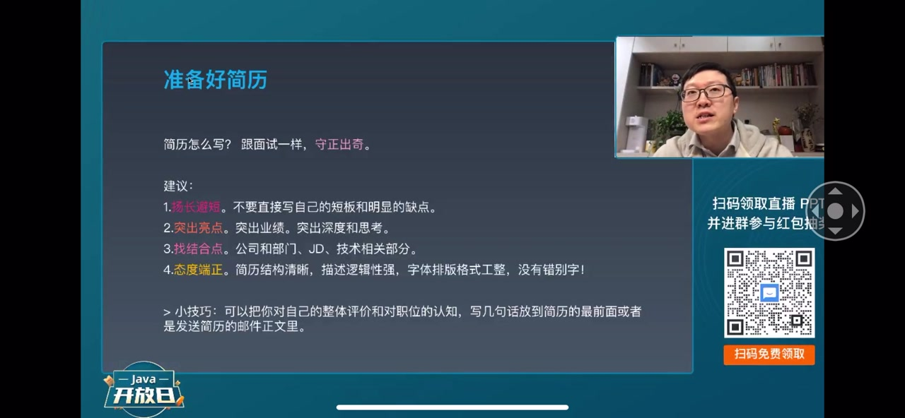
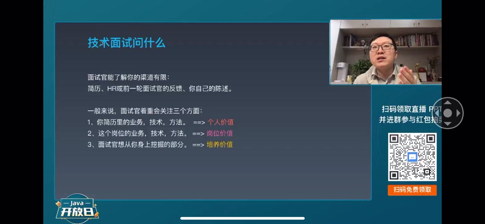
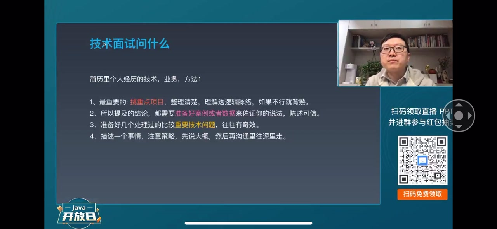
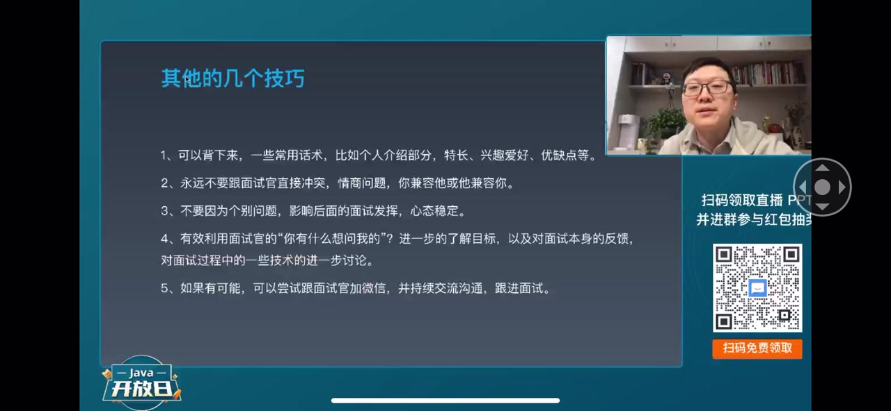
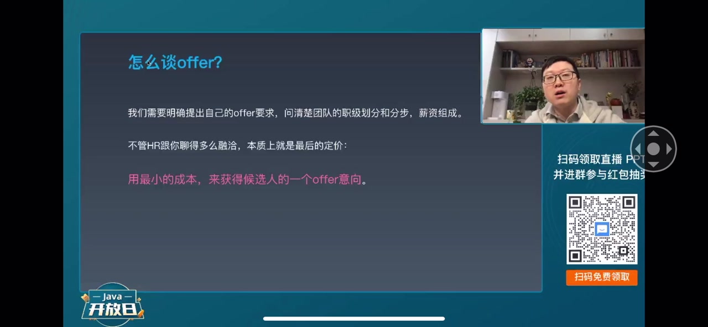

01
中文
面试的目标：优势不失分，亮点多加分。
EN
The goal: don't lose points on your strengths, gain extra for your highlights.
表达提示扬长避短：play to your strengths

Scene English · 视频学习
Cracking Big-Tech Interviews: From Resume to Offer
🎧 语音讲解
Four principles for interviews
情境讲者给出面试的总体目标与四项原则：扬长避短、突出亮点、找结合点、态度战争，从简历到面试都要贯彻。
面试的目标：优势不失分，亮点多加分。
The goal: don't lose points on your strengths, gain extra for your highlights.
表达提示扬长避短：play to your strengths
突出你的亮点，特别是业绩和深度思考。
Highlight your wins, especially results and deep thinking.
表达提示突出亮点：highlight your wins
简历要跟职位描述找最大的结合点。
Find the biggest overlap between your resume and the job description.
表达提示找结合点：find the overlap
「扬长避短不失分」→ 优势最大化
「态度战争」→ 细节决定印象

How interviewers evaluate you
情境讲者解释技术面试官在短时间内从个人价值、岗位价值、培养价值三个维度考察候选人，并给出重点项目演练的应对方法。
面试官需要在短时间内全面了解你。
The interviewer has to size you up quickly.
表达提示全面了解：size you up
他考察你的个人价值、岗位价值和培养价值。
He weighs your personal value, fit for the role, and growth potential.
表达提示岗位价值：fit for the role
挑两三个重点项目，提前演练好。
Pick two or three key projects and rehearse them in advance.
表达提示提前演练：rehearse in advance
「把项目讲圆」→ 完整讲清项目
「深挖技术」→ 追问到底

Back your claims with data
情境讲者强调结论要配数据案例支撑，并讲解回答大问题先讲整体策略、用反问把笼统问题具体化的说话策略。
说结论的时候，要准备好相应的数据案例。
When you state a result, back it with data and cases.
表达提示数据案例：data and cases
先说整体策略，再逐渐深入细节。
Start with the big picture, then go into details.
表达提示先说整体：start with the big picture
笼统的问题，可以用反问把它具体化。
Vague questions can be narrowed down by asking follow-ups.
表达提示反问具体化：narrow down with follow-ups
「用数据支撑论点」→ 让论点可信
「给面试官提供假设条件」→ 澄清问题

Five practical interview tips
情境讲者总结五个技巧：背熟常见内容、不与面试官冲突、个别问题答不上没关系、善用反问、尝试加微信。
常见的自我介绍、优缺点，都可以背熟。
Practice common answers like self-introduction and strengths until they're smooth.
表达提示背熟：practice until smooth
永远不要跟面试官做重点的冲突。
Never get into a head-on conflict with the interviewer.
表达提示不要冲突：avoid conflict
个别问题没答上来，不影响整体评价。
Missing one question won't ruin your overall evaluation.
表达提示个别问题：a single question
「至少减50分」→ 冲突代价巨大
「像做题先跳过卡住的」→ 别影响心态

Negotiating with HR
情境讲者解释 HR 是服务部门、offer 只是采购意向，主动权在候选人手里，并提供薪资增量证据、在评级区间内争取最大利益的谈薪方法。
HR 是服务部门，帮你把 offer 争取下来。
HR is a support function; they help secure your offer.
表达提示服务部门：a support function
offer 只是采购意向，不是最终的合同。
An offer is an intent to hire, not the final contract.
表达提示采购意向：an intent to hire
谈薪水要直接表达，主动权在你手里。
State your salary ask directly — you hold the leverage.
表达提示主动权在你手里：you hold the leverage
「给HR提供证据」→ 让争取有依据
「评级区间内都能谈」→ 区间内可协商
表达「扬长避短」
表达「讲思考过程」
表达「数据支撑结论」
表达「主动争取薪资」
highlight 作动词时搭配 achievements/results，不单独说 my highlight。
push 比 press 更贴近面试语境。
intent to hire 是 HR 领域的标准说法。
表达「主动权」用 hold the leverage。